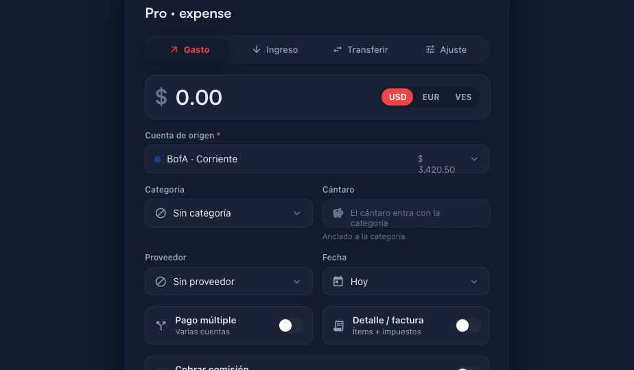
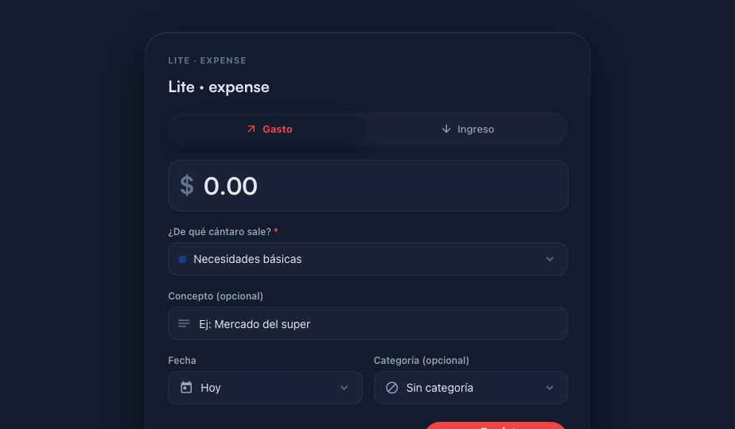
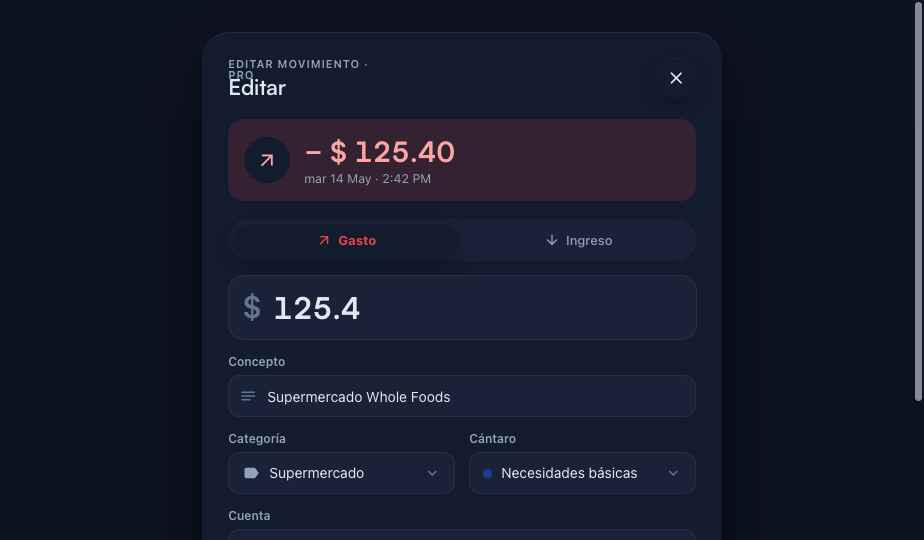
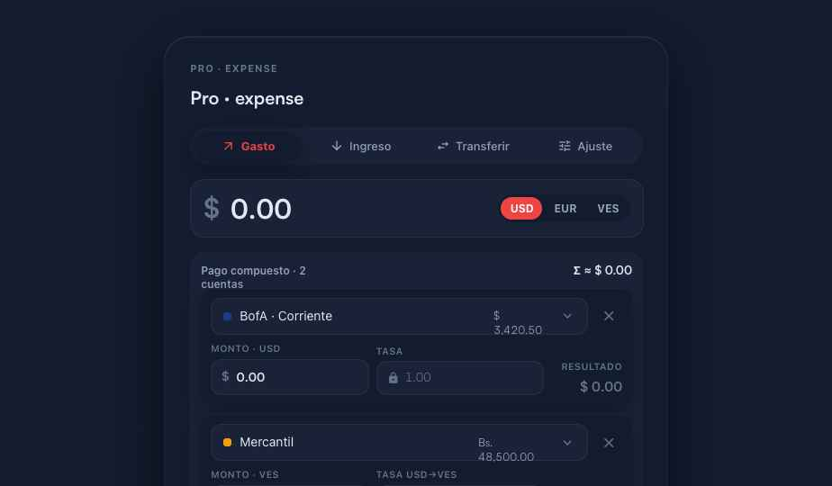
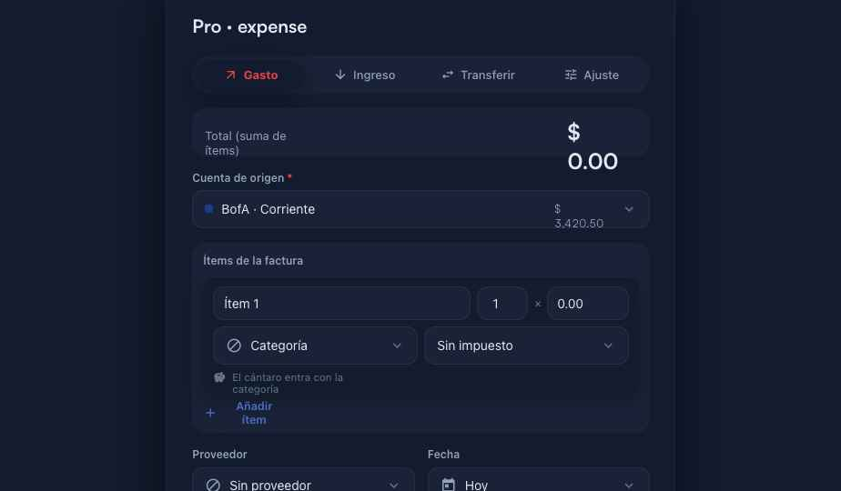
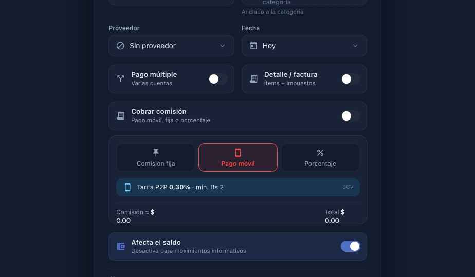
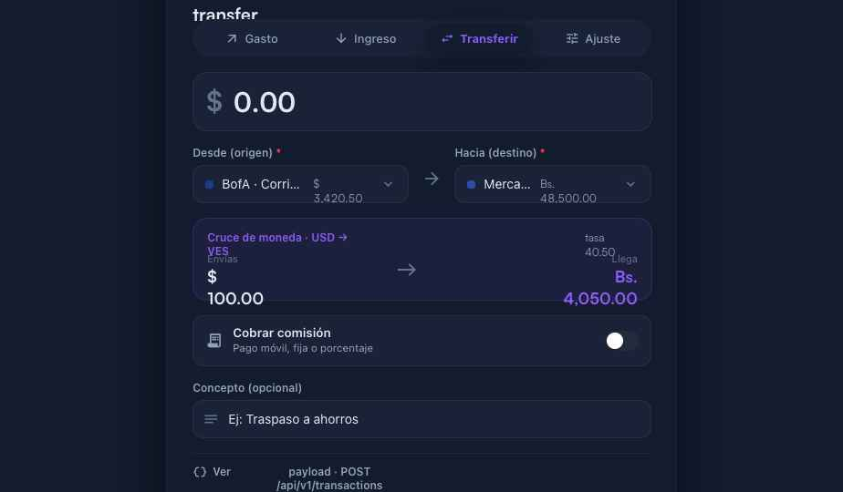
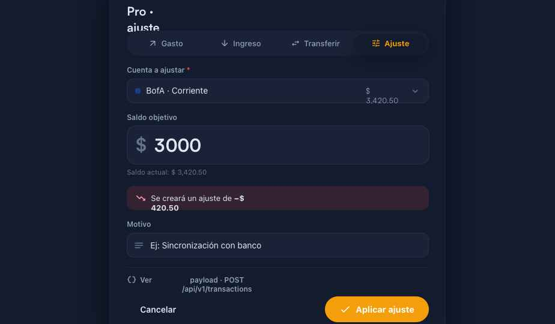
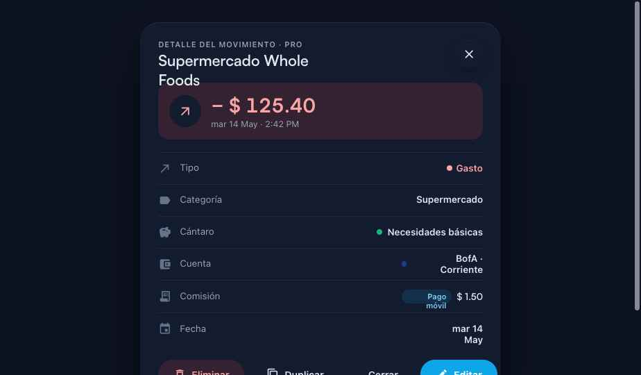
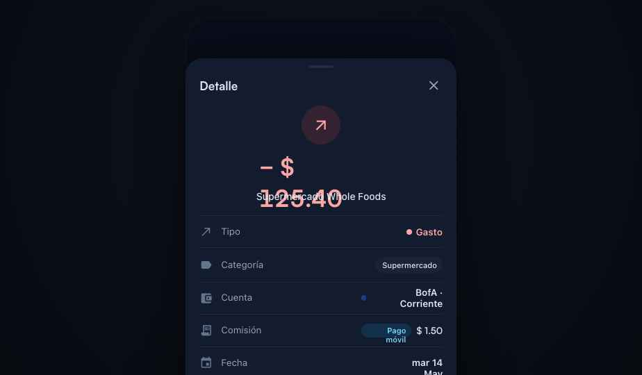

Revisión a detalle de las piezas existentes en los kits reales — Desktop (TransactionForm + TransactionDetailModal) y Mobile (TransactionFormSheet + TransactionDetailSheet). Verificada en dark mode sobre los 8 modos del formulario y los dos modos del detalle. Cada punto del checklist se marca aprobado / atención / rediseñar.
14
Puntos aprobados — la base funciona y respeta los tokens
17
Puntos de atención — ajustes de layout, densidad y tipografía
5
A rediseñar — contradicción del cántaro, Ajuste mobile, colisión del hero
priority_highLos 3 problemas que más pesan
1. El cántaro anclado a la categoría solo se respeta en el form Pro de gasto/ingreso. Lite, la edición del detalle desktop y todo el form mobile siguen usando un selector manual de cántaro — contradicen la regla. 2. El modo Ajuste no existe en mobile (solo 3 tabs). 3. En el detalle mobile, el monto hero se solapa con el concepto (colisión de layout).
1A · Jerarquía visual del formulario
Orden de lectura y dominancia de los elementos principales.
check
El selector de tipo es el primer elemento y es dominante
El Segmented Gasto/Ingreso/Transferir/Ajuste abre el form, a todo el ancho, con acento por tipo (rojo gasto, verde ingreso, violeta transferir, ámbar ajuste). Correcto.
error
El monto es el elemento más grande (28–32px)
El MoneyInput usa 28px (cumple el mínimo), pero compite en peso visual con el segmented justo encima. A 28px no “domina” como en la referencia Revolut. Sugerencia: subir a 32–36px y dar más aire alrededor del monto.
error
Separación visual entre secciones
Todo el form fluye con el mismo gap (14–16px): monto, cuenta, categoría-cántaro, proveedor-fecha y los 4 toggles avanzados tienen el mismo ritmo. Cuesta escanear. Falta agrupar (aire o separadores sutiles) entre “lo esencial” y “lo avanzado”.
error
Los toggles avanzados se descubren sin ser ruidosos
Los Switch tienen buen contraste. Pero se acumulan 4 seguidos al final (Pago múltiple · Detalle/factura · Cobrar comisión · Afecta el saldo) y aplanan la jerarquía. Considerar colapsar lo avanzado bajo un “Más opciones”.

▲ Gasto · Pro (desktop). El ritmo vertical es uniforme; el monto a 28px no destaca lo suficiente frente al segmentado. Nótese el saldo $ 3.420,50 partido en dos líneas dentro del selector de cuenta.
1B · Cántaro anclado a la categoría
El cántaro no se elige a mano: entra como lectura derivada de la categoría.
check
Placeholder sin categoría legible pero secundario
“El cántaro entra con la categoría” en --fg-3 con borde punteado. Jerarquía correcta. (Atención: el texto se parte en dos líneas en el ancho de media columna.)
check
El chip del cántaro se distingue del selector de categoría
Cuando la categoría tiene cántaro, el chip usa fondo tintado con el color del jar + ícono cuadrado de color + nombre y %. Se diferencia bien del Picker neutro de categoría al lado.
error
El ícono lock comunica solo-lectura
Funciona, pero es pequeño (16px, fg-3) y queda a la derecha; es fácil pasarlo por alto. Reforzar con un microcopy (“definido por la categoría”) más visible o un tratamiento de “solo lectura” más claro.
check
Estado “sin cántaro para esta categoría”
“Esta categoría no aporta a ningún cántaro” con ícono block. Claro.
cancelContradicción crítica — la regla se rompe en 3 lugares
La regla “cántaro anclado a categoría” solo se aplica en el form Pro de gasto/ingreso (desktop). En cambio:
Lite (gasto): pregunta “¿De qué cántaro sale?” con un picker manual y deja la categoría como opcional aparte. desktop+mobile
Detalle · edición (desktop): Categoría y Cántaro son dos pickers independientes que pueden desincronizarse.
Form mobile: Categoría y Cántaro lado a lado, ambos manuales; las categorías son una lista fija de 8 strings sin jarId.
Decisión acordada para Fase 2: siempre anclado a categoría, eliminar el selector manual en estos 3 sitios.

▲ Lite · gasto: “¿De qué cántaro sale?” es un picker manual y la categoría queda como opcional — inverso al modelo anclado.

▲ Detalle · edición: Categoría y Cántaro editables por separado, sin vínculo.
1C · Editor de pago compuesto (split)
error
Cuenta + monto + tasa + resultado legibles a 375px
En desktop (560px) las 3 columnas son legibles y la fila VES muestra TASA USD→VES editable. Pero en el kit mobile el split no tiene columna de tasa — solo cuenta + monto, sin manejo multi-moneda. Falta paridad.
check
Total acumulado en el header del bloque
Σ ≈ $ X arriba a la derecha del bloque. Bien posicionado. (Atención: el rótulo “Pago compuesto · 2 cuentas” se parte en dos líneas.)
check
Botón “Añadir cuenta” visible sin distraer
Link con “+” en color de marca, discreto y descubrible. Correcto.

▲ Split desktop: 3 columnas legibles; fila VES con tasa editable. Wrap en el header y en el saldo de la cuenta.
1D · Editor de factura / monto compuesto
error
Los 4 campos del ítem son accesibles
[nombre] [qty] × [precio] [×]. En desktop el qty (56px) y precio (90px) son angostos; en mobile el layout apila bien. Aceptable pero ajustado para edición rápida.
error
¿Demasiada info por ítem en mobile?
Categoría + impuesto + línea “cántaro derivado” por ítem es mucha densidad apilada. Recomendado: colapsar lo secundario a un acordeón por ítem (como sugiere el brief).
check
Botón cerrar (×) con un solo ítem
Se oculta correctamente cuando hay 1 ítem (items.length > 1).
cancel
Falta el estado vacío de la factura 2.2
Al activar “Detalle / factura” aparece directamente un ítem en blanco — sin guía. Falta el estado vacío (ilustración + texto + CTA “Añadir primer ítem”). Además el bloque “Total (suma de ítems)” y el monto $ 0.00 se parten en dos líneas, y “Añadir ítem” también.

▲ Factura recién activada: ítem en blanco sin estado vacío; “Total (suma de ítems)”, “$ 0.00” y “Añadir ítem” parten en dos líneas.
1E · Comisión Venezuela
cancel
Las mini-tabs miden ≥ 44px en mobile
Desktop ~46px (ok). En mobile el padding 9px 4px da ~36px de alto — por debajo del mínimo de 44px para touch. Subir el alto en mobile.
error
El chip de pago móvil comunica que es automático
Muestra “Tarifa P2P 0,30% · mín. Bs 2 · BCV”, pero no dice explícitamente que no requiere ingresar nada (auto-calculado). Comunica la tarifa, no el automatismo.
check
Resumen Comisión ≈ $X · Total $Y diferenciado
Usa --font-money en negrita frente al label body. Correcto. (Atención: a 560px el “$” y la cifra se parten en dos líneas.)

▲ Comisión · pago móvil (desktop): 3 mini-tabs + chip BCV. El resumen money parte en dos líneas.
1F · Cruce de moneda (cross-currency)
check
El bloque morado contrasta en dark mode
El fondo rgba(139,92,246,.08) + borde .18 es visible y se diferencia del resto en dark. Suficiente.
error
¿La tasa es editable o solo informativa?
Inconsistente: en transferencia es solo informativa, en split es editable por fila. Además, el cruce de moneda no existe en mobile. Unificar el comportamiento.
error
Layout del bloque de preview
El header “Cruce de moneda · USD → VES” y los montos $ 100.00 / Bs. 4.050,00 se parten en dos líneas; “Envías/Llega” quedan apretados sobre las cifras.

▲ Transferencia USD→VES: el bloque comunica bien la conversión, pero los montos y el header parten en dos líneas.
1G · Modo Ajuste de saldo
check
Saldo objetivo + preview del delta intuitivo
“Se creará un ajuste de −$ 420,50” con flecha (↑/↓) y color income/expense, más el saldo actual como hint. Se entiende sin explicación extra.
check
Campo “Cuenta a ajustar” prominente antes del monto
Ya existe y va primero, a todo el ancho (desktop). Correcto.
cancel
El modo Ajuste existe en mobile 2.3
No existe. El form mobile tiene solo 3 tabs (Gasto/Ingreso/Transferir). Falta el 4.º tab Ajuste y su pantalla (cuenta a ajustar + nuevo saldo + delta + motivo).

▲ Ajuste (desktop): cuenta primero, delta claro. Wrap menor en “−$ 420,50”.▲ Mobile: solo 3 tabs — sin Ajuste. Categoría y Cántaro ambos manuales.
1H · Modal de detalle / edición
check
Filas de detalle con separación vertical suficiente
Cada fila ícono + label + valor con 13px de padding y borde superior. Ritmo correcto.
check
El hero del monto comunica el tipo
28px con fondo income/expense + ícono ↓/↗ y color. Comunica ingreso vs gasto de un vistazo (desktop).
error
El Segmented de edición deja claro que cambia el signo
No hay rótulo que lo explique; se infiere por el color. Aceptable, pero un microcopy ayudaría. El monto en edición además se muestra sin formato (“125.4”).
check
Confirmación de eliminación inline
Fondo --expense-soft + texto rojo + “No se puede deshacer”. Alarmante sin ser agresivo. (La acción Duplicar ya está añadida junto a Eliminar.)
cancel
Detalle mobile — colisión del hero
El monto hero centrado se solapa con el concepto (“Supermercado Whole Foods” se dibuja encima de “$ 125,40”). Defecto de layout claro a rediseñar.
error
Valores a la derecha parten en dos líneas
“BofA · Corriente”, “Pago móvil $ 1,50” y “mar 14 May” se parten — mismo problema sistémico de wrap (ver abajo).

▲ Detalle · vista (desktop): jerarquía correcta; valores de la derecha parten en dos líneas.

▲ Detalle mobile: el concepto se solapa con el monto hero — colisión a corregir.
Hallazgos sistémicos
Patrones que cruzan varias pantallas — convienen arreglarse de raíz.
S1 · Wrapping de cifras de dinero
El símbolo de moneda + la cifra se parten en dos líneas en muchos contenedores estrechos: el right del Picker (saldos), los bloques de preview (cruce de moneda, total de factura), el resumen de comisión y las filas de valor del detalle. Causa: la --font-money es ancha y los spans no fijan white-space:nowrap. Es el defecto más repetido de toda la auditoría.
S2 · Contradicción del cántaro (anclado vs manual)
Coexisten dos modelos: anclado a categoría (Pro form) y selección manual (Lite, edición del detalle, mobile). Hay que unificar a anclado en todas partes.
S3 · Modelo de datos divergente
Desktop usa SAMPLE_CATEGORIES con jarId (la categoría conoce su cántaro). Mobile usa una lista fija de 8 strings (TFS_CATS) + un picker de cántaro suelto, sin relación categoría→cántaro. Sin un modelo común, el selector de categoría dedicado (2.1) no puede derivar el cántaro en mobile.
Paridad desktop ↔ mobile
El form mobile va por detrás del desktop. Lo que el desktop tiene y mobile no:
Modo Ajuste — ausente en mobile.
Cruce de moneda — sin preview en transferencia ni tasa por fila en split.
Por ítem de factura: impuesto y cántaro derivado — ausentes en mobile.
Proveedor y selector de fecha — ausentes en mobile.
Selector de moneda del monto (USD/EUR/VES) — ausente en mobile.
No todo tiene que llegar a mobile, pero conviene decidir el alcance consciente antes de Fase 2.
Listo para Fase 2 — piezas confirmadas
La auditoría confirma qué hay que construir. Resumen de lo que entra en la fase de diseño:
2.1 Selector de categorías (Sheet mobile + Popover desktop) — hoy es un dropdown inline; en mobile son 8 strings fijos. Requiere modelo categoría→cántaro común (S3).
2.2 Estado vacío de la factura — confirmado ausente.
2.3 Modo Ajuste en mobile — confirmado ausente (4.º tab + pantalla).
2.4 Paso de confirmación — recomendación abajo.
2.5 Estados del botón Guardar (loading/success/error) + validación de campos — hoy no existen.
2.6 Transaction Preview Card — reemplazo del bloque “payload JSON” (hoy visible en producción, feo para usuario final).
2.7 Selector de cántaro Lite — descartado por tu decisión: el cántaro siempre se ancla a la categoría, también en Lite.
recommendRecomendación para 2.4 (paso de confirmación)
Híbrido B + C. Para el flujo simple (la mayoría): Opción B — guardar directo + toast “Movimiento registrado · Deshacer” (3 s). Es la fricción mínima que pide un usuario que registra docenas de movimientos por semana. Para operaciones complejas (pago compuesto, factura con ítems, o con comisión): Opción C — una Transaction Preview Card sobre el botón Guardar que resuma en lenguaje natural lo que se va a registrar, porque ahí el costo de un error es alto. Lo detallamos y mockeamos en Fase 2.
Evidencia capturada con un harness que monta los componentes reales de los kits en dark mode. Archivos en redesign/audit/.